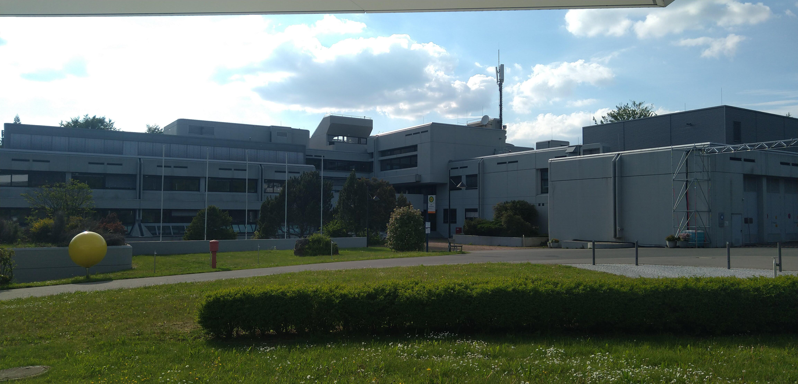
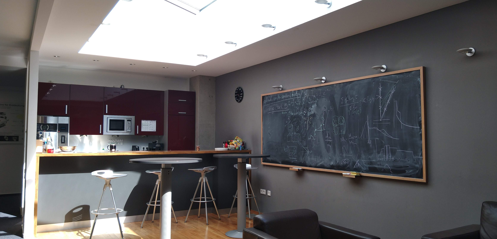
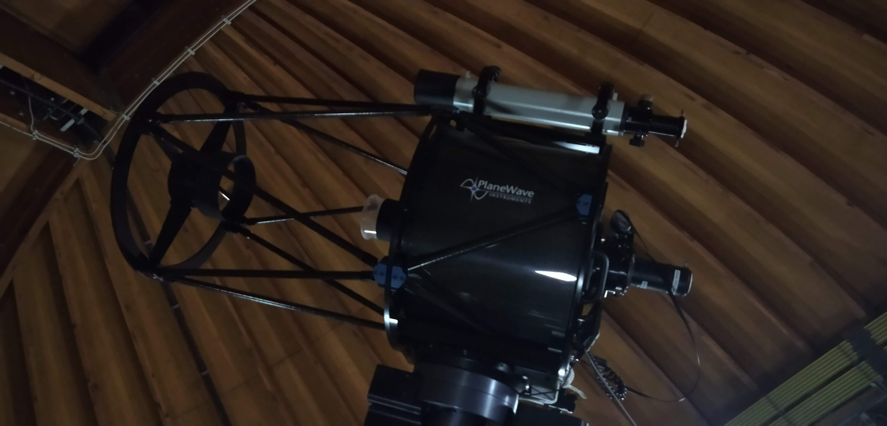
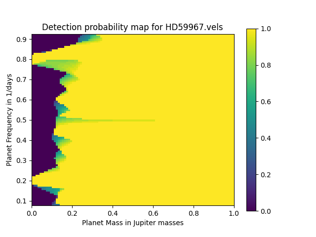
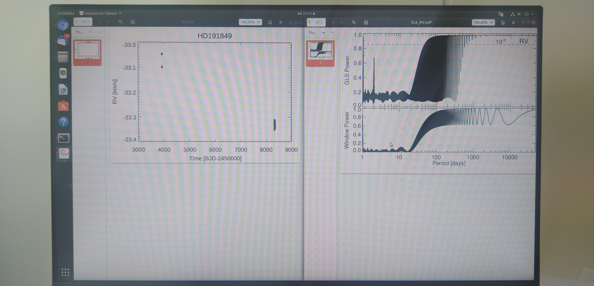
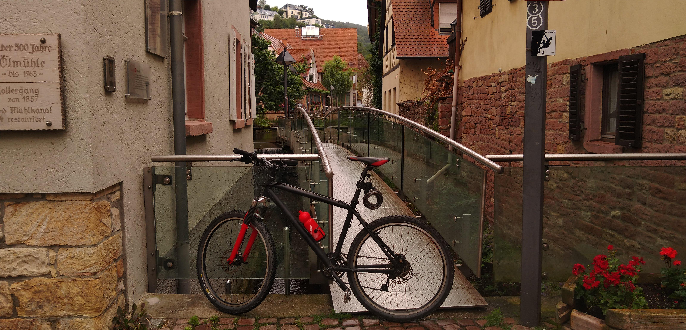
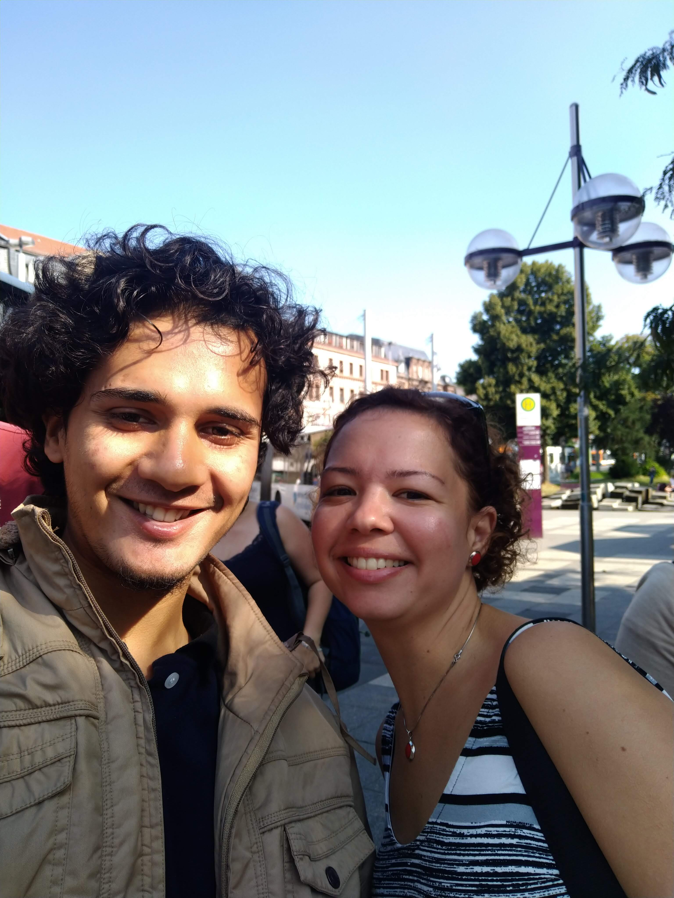
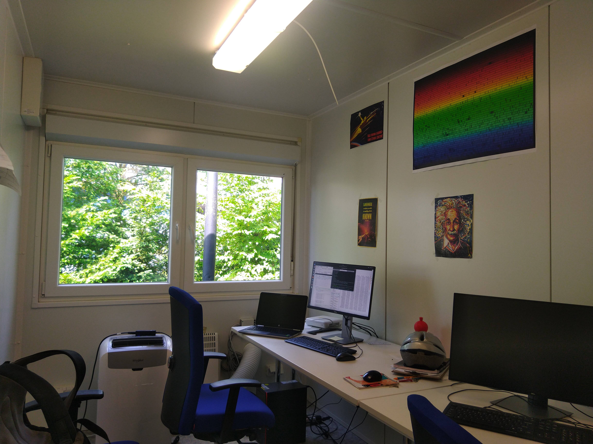
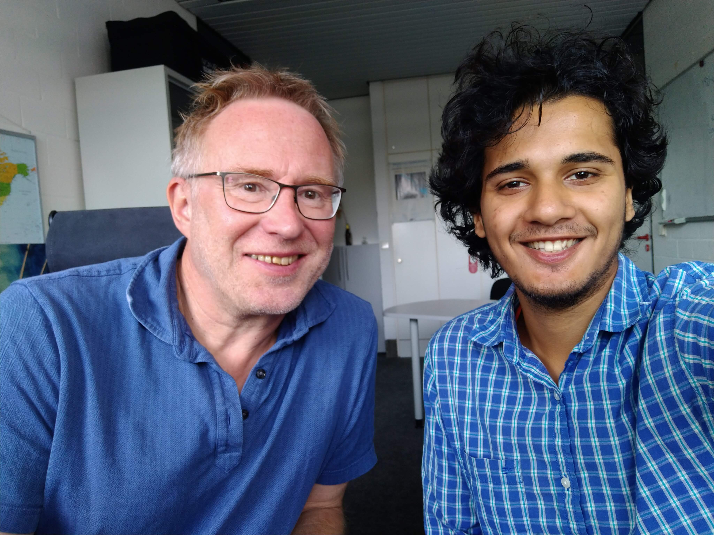
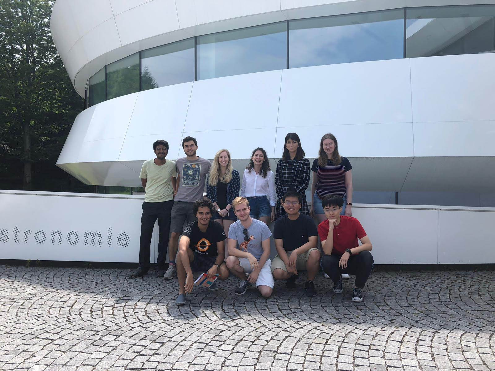

My research experience at Max Planck Institute for Astronomy, Heidelberg.
| Summer 2019 |
I was selected for the Max Planck Institute of Astronomy's internship programme in my third year. It was my first paid work experience. I
lived in Heidelberg Germany for 72 days, working on weekdays and exploring Europe with friends on weekends.
I joined the RVSPY : Radial Velocity Search for Planets around Young Stars international team. My internship advisors were Dr. Olga Zakhozhay
and Prof. Ralf Launhardt. This is a relatively new project, a sister project of the well
known ISPY: Imaging Survey for Planets around Young stars project.
There are several open questions in the study of planet formation. By studying the solar system we had a great idea about how our planets and asteroids
came to be, however it was not until we started discovering exoplanets (planets in orbit around stars other than the Sun) that we could hope to study
planets as they are being formed, and to get a large number of examples of planets. The first technique used to discover exoplanets was the Radial
Velocity method, later followed by transit photometry method. RV method is a classic spectroscopic method which employs the use of doppler
shifts to calculate the radial component of the star's motion. Any two bodies in a gravitational orbit trace circles around their center of mass,
known as the barycenter. With modern instruments we can detect this small circular motion of a star and indirectly detect the planet. Our project aims to find exoplanets around young stars, hopefully to get snapshots of planet formation.
In the internship I learned how to understand spectroscopic data, learned the pipelines to reduce the data to necessary physical quantities. I carried out this
data reduction by automatising via a python code, then manually studied 110 stars. First I shortlisted candidates which showed a promising periodic signal in RV.
Secondly I made sure that this signal was not caused by the rotation of the star. This was not an easy task, for this you must use other things derived from the
spectrum, we call them activity indicators. In particular, uneven distribution of star spots causes variations in the radial velocity. Star spots have their own characteristics
which help us identify them separately, being at a different temperature, they absorb H alpha line differently. Periodic variation in H alpha line has no relation
with the previously mentioned circular motion, so it indicates the presence of rotating star spots. Other indicators include line depth ratios (LDR), where we take the
ratio of the depths of absorption lines from two particular elements (let us say Ni and Co), and see if there is any periodicity in this ratio. It works because star spots
absorb different elements differently, and the difference is exaggerated for certain pairs of elements.
Finally I compiled a table of exoplanet candidates and their characteristics (so we take more observations of these stars and confirm our discoveries) free of the stellar activity false signals.
This work is included in the paper "RVSPY: Radial Velocity Search for Planets around Young Stars; Target characterisation and results from the first
year of observations." submitted to 'Astronomy and Astrophysics' journal. It was published in 2022.
|
| 2020 Onwards |
When the COVID-19 pandemic brought the world to a halt in 2020, my tentative summer internship was unfortunately cancelled due to
international travel restrictions. Hence I asked Ralf for another project and I joined RVSPY again. This project continued alongside my academic work
of the final year of BS+MS.
It is a python simulation project. As we discussed earlier, planets cause the host star to oscillate when they trace their orbits. Since
the masses of stars are significantly larger than that of the planets, the oscillation is very small. For example, if we were observing our solar system
from far away stars, we could barely detect Jupiter, which is the most massive planet in the solar system. So we tend to observe close and massive planets.
Hence it becomes an imperative that whenever we produce a curve-fit which predicts a certain frequency/radius and mass of the planet, we must check
if such a system can even produce an RV signal strong enough to be detected by our instruments. This is where my project comes in. I have created a simulation
which takes sparse RV data and creates a map which gives us an idea of what is the detection probability for a given frequency/period and mass of the planet.
Link to GitHub project: Here.
|
Gallery:
|  |
 |
|  |
 |
|  |
 |
|  |
 |
|  |
 |
|